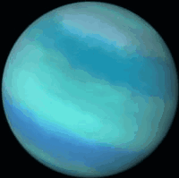

Video

Discovered by William Herschel.
About Uranus
| Type | Ice Giant |
| Size(diameter) | 50,724 km, or about 4 Earths |
| Mass | 8.7 × 1025 kg, or about 15 Earths |
| Lenght of a year (orbital perior) | 84 years |
| Numbers of moons | 27 |
| Average distance from the Sun | 2.9 billion km |
| Temperature | Between -226 and -197 degrees Celsius |
Due to its non-solid surface, landing or visiting this planet is impossible. However, visiting its largest moons like Titania and Oberon could be feasible, as they have a solid surface with ample exploration potential, featuring numerous ice-covered craters and mountains. From there, one could observe the planet's blue-green color along with its ring system